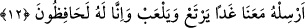

Bu dar halvetteyim, gönlüm sahrâya gitmeyi çeker
Çünkü seher rüzgârı bostandan hoş haber getirir
Yâkub (a.s.) uzun ve derin düşüncelere daldı. İşte o zaman oğulları “Dediler ki: “Ey
babamız,” kendileri ile babaları arasındaki nesep bağını harekete geçirmek ve Yûsuf’la
aralarındaki kardeşlik râbıtasını hatırlatmak için bu şekilde hitâb ettiler. Böylece
kıskançlık ve kötülük etme emâreleri gördüğü için Yûsuf’u kendilerinden koruyup
sakınma fikrinden vazgeçirmeye çalışıyorlardı.
Sen bizim babamız, biz senin oğulların, o da bizim kardeşimizken “neden Yûsuf ’u
bize güvenmiyorsun?” Bize güvenmemekteki, yani endişe etmekteki mazeretin nedir?
“Oysa biz sadece onun iyiliğini düşünenleriz.” Yani, oysa biz onun hakkında hayır
dileyen, ona karşı şefkatli kişileriz; aramızda onun iyiliğini düşünmeyecek bir kişi bile
yok, demektir.
12. “Yarın onu da bizimle beraber gönder, bol bol yesin, oynasın; biz onu elbette
koruruz.”
“Yarın onu da bizimle beraber” kıra “gönder, bol bol yesin,” yani meyveler yesin,
lezzetli şeylerden bol bol yararlansın. Kâfirlerle savaşma taktiklerini öğretmek için
oynanan harp ve yarışma oyunları “oynasın”
Kardeşler, bu tip hareketler görünürde oyun oldukları için onları ‘oyun’ diye
isimlendirdiler. Ayrıca o gün hiçbiri peygamber değildi. Yine oynamaktan maksad gönül
genişliği elde etmek için mübah hareketlere yönelmek de olabilir. Nitekim Hz.
Peygamber (s.a.)’in Cabir’e şöyle buyurduğu rivâyet edilir: “Bakire alsaydın ya
(bakire ile evlenseydin ya); sen onunla oynaşırdın, o da seninle oynardı.”[12]
Ebü’l-Leys der ki: “Burada dinen yasaklanmış olan bir oyunu kasdetmiyorlardı.
Kasdettikleri sadece günah olmayacak şekilde şakalaşarak hoşça vakit geçirmektir.”
Burada şakalaşmakta bir mahzur olmadığına delil vardır.
Mü’minlerin emîri Hz. Ali (r.a) der ki: “İnsanın, asık suratlı biri olmaktan kurtaracak
latîfeler yapmasında sakınca yoktur.”
Rivâyet edilir ki Adamın biri bir adamın yakasına yapışarak Hz. Ali’ye getirdi. “Bu
adam, benim annemle rüyasında ihtilam olduğunu iddiâ ediyor. Bunun üzerine Hz. Ali
şöyle dedi: “Öyleyse bu adamı güneşe çıkar, sonra da gölgesini döv.”
“Biz onu” başına bir kötülük gelmesinden “elbette koruruz.”
Sonra, “Peki Yâkub (a.s.) onlara ne cevap verdi?” şeklindeki soruya cevap olarak
yeni bir cümle başlıyor: